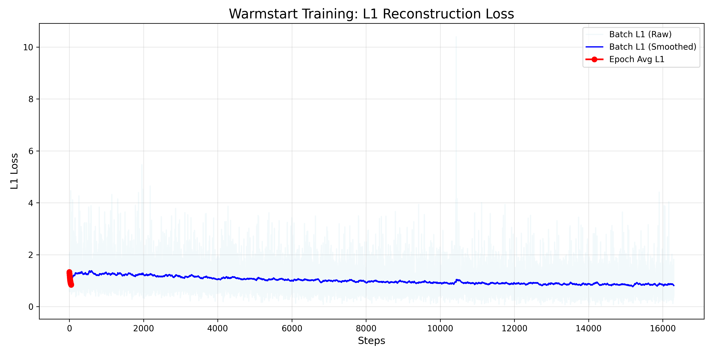
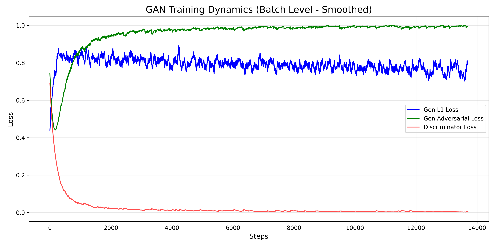

Training Logs & Metrics
Visualization of the model training process, tracked via MLflow.
Phase 1: Warmstart (Supervised Learning)
Training the Generator with L1 Loss. The chart shows high-frequency batch loss (light blue) and the overlaid smoothed trend (dark blue). Red dots indicate the average loss at the end of each epoch.
Interpretation: A stable warmstart phase is characterized by a rapid initial drop in L1 loss followed by a gradual decay. If the red dots (epoch averages) align closely with the blue trend line, the model is generalizing well. Consistent convergence suggests the model has successfully learned the baseline physical mapping from predictors to precipitation.
Phase 2: GAN Training (Epoch Averages)
Long-term training trends per epoch.
Blue: Generator Reconstruction Loss (Physical consistency).
Green: Generator Adversarial Loss (Effort to fool Discriminator).
Red: Discriminator Loss (Ability to detect fakes).
Interpretation: In a stable GAN, neither the Generator (Green) nor the Discriminator (Red) should win completely. Ideally, losses should oscillate around a stable mean. If D_loss drops to zero, the Discriminator is too strong (vanishing gradients). If it rises continuously, the Generator is dominating. A stable 'Gap' between G and D indicates healthy adversarial competition.
Phase 2: GAN Dynamics (Batch Level)
High-frequency training dynamics smoothed for visualization. This view reveals the fine-grained competition between the Generator and Discriminator.
Interpretation: High-frequency oscillations are expected here. Stability is indicated by bounded variance—spikes shouldn't grow uncontrollably. The L1 Loss (Blue) should remain low and steady, ensuring that even as the generator fights the discriminator, it doesn't lose sight of the physical ground truth (rainfall patterns).